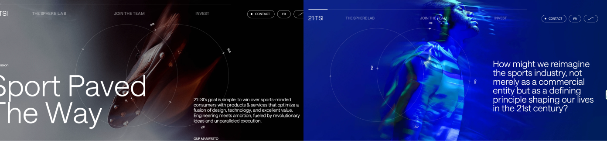

La página 21tsi.com pertenece a la agencia creativa digital 21 TSI, especializada en la creación de experiencias interactivas. El sitio destaca por su enfoque innovador en diseño y tecnología, combinando animaciones fluidas, efectos visuales experimentales y una navegación poco convencional. Gracias a esta propuesta innovadora el proyecto ha sido reconocido con premios como los FWA (Favourite Website Awards), que valoran la creatividad digital a nivel internacional.

Al analizar el SEO de la web de 21 TSI, he detectado
varias buenas prácticas ya implementadas, aunque también hay algunos
puntos clave que podrían optimizarse para mejorar su visibilidad en
buscadores.
Lo primero que revisé fue el título de la web:
<title>21 TSI | Join The Future Of The Sports
Industry</title>
Este título está bien estructurado. Contiene el nombre de la marca y
una propuesta de valor clara. Aun así, se podría considerar añadir una
palabra clave concreta del sector (por ejemplo: "sports tech",
"innovación deportiva") para reforzar el posicionamiento.
En cuanto a la meta descripción, no se detectó ninguna en el código
HTML. Este elemento es fundamental para mejorar el CTR en resultados
de búsqueda. Se recomienda incluir una como:
<meta name="description" content="21 TSI es un laboratorio
digital que impulsa el futuro de la industria del deporte a través
de experiencias visuales, innovación y tecnología.">
Esto ayudará a los motores de búsqueda a entender mejor el propósito
del sitio y animará a más usuarios a hacer clic en el enlace.
En relación a la estructura de encabezados
(<h1>, <h2>, etc.), el
<h1> está correctamente usado y presenta una
frase impactante:
<h1>Everyone hates change but... They line up for a
revolution.</h1>
Aunque no contiene palabras clave relacionadas con la industria, sirve
bien como gancho visual. Aun así, se podría valorar incluir un
<h2> adicional con keywords más específicas
para equilibrar lo visual con lo técnico.
En cuanto a las imágenes, se observan prácticas positivas:
- Uso de loading="lazy" para carga diferida, lo cual
mejora el rendimiento.
- Formatos modernos como .webp y
.svg que optimizan la carga.
Sin embargo, en muchos casos el atributo alt está
vacío:
<img src="/assets/images/desktop/detail-1.webp"
alt="">
Esto es aceptable si son imágenes puramente decorativas, pero en casos
donde la imagen aporta valor visual o contenido, es importante usar
descripciones más útiles, como por ejemplo:
<img src="/assets/images/desktop/detail-1.webp" alt="Detalle
gráfico digital de 21 TSI">
También se echa en falta el uso de srcset, que
permite servir imágenes adaptadas al tamaño del dispositivo. Esto
sería ideal para mejorar aún más la velocidad en móviles. Por último,
no se encontró ningún favicon ni
manifest.json, dos archivos que no solo ayudan al SEO
técnico, sino que mejoran la experiencia de usuario en dispositivos
móviles y navegadores.
En la web de 21tsi se pueden encontrar varias
etiquetas que mejoran la accesibilidad y también ayudan a estructurar
mejor el contenido. Por ejemplo, se utilizan encabezados como
<h1> para los títulos principales de los
proyectos, como en:
<h1>Experimental Typography</h1>, lo cual
permite que las tecnologías de asistencia identifiquen fácilmente cuál
es el contenido principal de cada apartado.
También se utilizan imágenes con el atributo alt, lo
que hace que los lectores de pantalla puedan describir ese contenido
visual. Un ejemplo es:
<img src="project_1.jpg" alt="Portada proyecto
editorial">
>, lo cual mejora mucho la experiencia para personas con
dificultades visuales.
Además, se ha hecho uso de etiquetas semánticas como
<section> o <footer>,
que ayudan a dar sentido a cada parte de la página, tanto para el
navegador como para usuarios con lectores de pantalla.
Sin embargo, al revisar el código no encontré atributos como
aria-label ni tabindex, que también
ayudan a mejorar la navegación accesible, especialmente en sitios con
elementos interactivos. En este caso, como la web es más visual y no
tiene formularios ni muchos botones, no es un fallo grave, pero
podrían añadirse en el futuro para mejorar aún más la experiencia.
Tampoco hay presencia de etiquetas <label>,
pero de nuevo, al no haber inputs ni campos de texto, no son
necesarias por ahora. Aun así, sería interesante añadir descripciones
accesibles en elementos como los enlaces de redes o los iconos.
La web de 21tsi está diseñada con una responsividad excelente. Al
reducir el tamaño de la pantalla o verla desde un dispositivo móvil,
el contenido se adapta de forma fluida y sin perder estructura. Un
buen ejemplo de esto es el menú de navegación, que se transforma
automáticamente en un icono de hamburguesa. Este cambio no solo ahorra
espacio, sino que también mantiene la usabilidad y el diseño limpio
incluso en pantallas pequeñas.
Aunque no se encuentran directamente en los estilos visibles, al
revisar más a fondo se observa que la web utiliza múltiples media
queries, como
(max-width: 767px),
(max-width: 1199px),
(min-width: 1500px) y
(prefers-reduced-motion), lo cual indica una gran
atención al detalle para adaptar el contenido a diferentes
resoluciones, dispositivos e incluso preferencias de accesibilidad
como reducir el movimiento.
Además, la etiqueta meta viewport está correctamente implementada con
<meta name="viewport" content="width=device-width,
initial-scale=1.0">, lo que permite que el contenido escale de forma adecuada según el
ancho del dispositivo.
También es importante destacar que las imágenes emplean el atributo
loading="lazy", que ayuda a mejorar la velocidad de
carga, especialmente útil en móviles. Aunque no se ha detectado el uso
de display: flex o grid de forma
explícita, el comportamiento general de la maquetación sugiere que se
han usado técnicas modernas de diseño adaptativo.
En conjunto, todos estos elementos hacen que la experiencia en móviles
y pantallas de distintos tamaños sea cómoda, rápida y visualmente
coherente.
La navegación por la web de 21tsi es fluida y dinámica, con tiempos de
carga muy rápidos, lo que permite una experiencia ágil desde el primer
momento. El diseño está estructurado con títulos claros y una
tipografía legible, lo cual facilita la lectura y comprensión del
contenido. Además, los contrastes de color están bien logrados, lo que
mejora aún más la accesibilidad visual.
Sin embargo, al no contar con indicaciones o un apartado que explique
cómo se usa la web, algunas personas pueden sentirse perdidas al
principio. En pruebas con usuarios, varios coincidieron en que la
navegación resultaba confusa, especialmente al hacer clic en ciertos
apartados que no se despliegan automáticamente, sino que requieren
hacer scroll manualmente. Esto, sumado a la estructura tipo one-page,
puede generar cierta frustración si se quiere acceder directamente al
final del sitio.
La experiencia visual es atractiva, con animaciones y
microinteracciones bien cuidadas, aunque algunas pueden llegar a
resultar un poco excesivas o cansar con el uso prolongado. Aun así, la
organización general de los apartados y la estética minimalista
aportan a una experiencia moderna y coherente.
Al analizar la estética y diseño visual de la web, lo primero que destaca es la experiencia de interacción única e inmersiva. Nada más abrir la página, un mensaje introductorio de Tech Sport Industry con una tipografía estilo videojuego establece un tono dinámico. Seguido de esto, un contador que va del 0 al 21 crea una sensación de anticipación, mientras que un efecto borroso transforma rápidamente el fondo de la página antes de revelar las secciones de la web.
Cada vez que se realiza scroll, las secciones y apartados se cambian con transiciones suaves, manteniendo un flujo visual fluido. La tipografía también se destaca por su dinamismo, apareciendo y desapareciendo con una transición de desvanecimiento, lo que aporta un toque de interacción continua. Además, el puntero tiene un efecto visual único: cuando se mueve, ilumina la zona por donde pasa, deformando ligeramente el fondo, lo que añade una capa extra de interactividad.
Los botones y textos del menú son igualmente interactivos, con efectos que los hacen más atractivos y animados, contribuyendo a una experiencia de usuario envolvente. Estos elementos no solo cumplen con su función, sino que se integran perfectamente con la estética de la página, sin sacrificar la funcionalidad.
La web respeta de manera cuidadosa los márgenes, el espaciado y la alineación, lo que contribuye a una estructura visual clara y armoniosa. Además, la disposición de los elementos mantiene un equilibrio entre la estética y la usabilidad, ofreciendo una navegación intuitiva.
En resumen, el diseño de la web es altamente interactivo, visualmente atractivo y coherente, logrando captar la atención del usuario de manera efectiva mientras mantiene una navegación fluida y agradable.
La web está protegida mediante HTTPS, asegurando una navegación cifrada y segura. Al acceder, aparece un aviso de cookies que informa al usuario sobre su uso, lo cual es un punto positivo en cuanto a transparencia y cumplimiento normativo. Además, se detectan cookies con el atributo SameSite=None; Secure, lo que indica que algunas de ellas son de terceros y están configuradas para operar de forma segura en entornos intersitio.
Aunque el aviso está presente, no se ha encontrado un enlace directo a una política de privacidad o configuración detallada de cookies. Sería recomendable incluir esta información accesible desde el aviso o el pie de página para reforzar la confianza del usuario y cumplir con normativas como el RGPD.